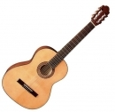

Almeria Pure Serie Europa 4/4 Honey
Bardzo dobrze wykonany instrument idealny na
początku nauki gry. Gitara nie sprawia kłopotów przy grze,
jest wygodna i brzmi przyjemnie. Polecana przez nauczycieli.
Płyta wierzchnia: świerk cieniowany
Boki i tył: Buk
Szyja klonowa, kolor orzechowy
Rozmiar: 4/4
Podstrunnica bukowa drzewo utwardzane, brzeg tyłu czarny
Niklowana oryginalna mechanika Van Gent
Długość 100 cm, menzura 650 mm, szer. siodełka 52 mm
PS500171